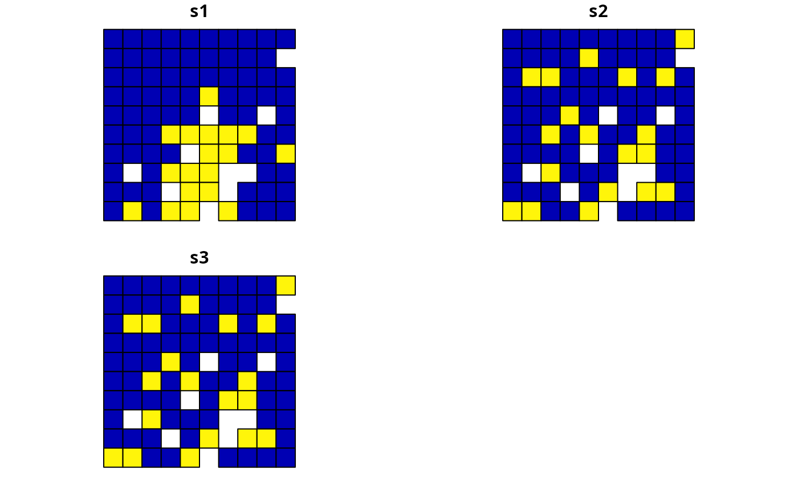
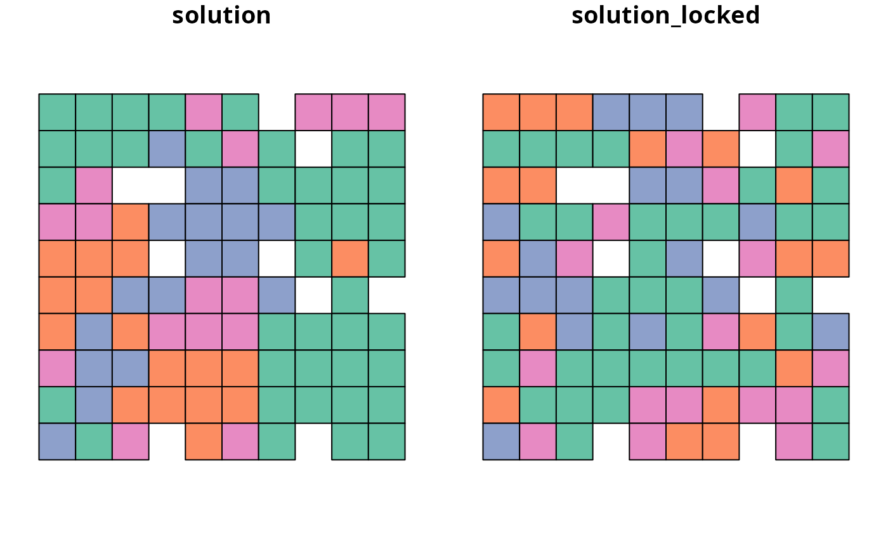

R/add_manual_locked_constraints.R
add_manual_locked_constraints.RdAdd constraints to a conservation planning problem to ensure
that solutions allocate (or do not allocate) specific planning units to
specific management zones. This function offers more fine-grained control
than the add_locked_in_constraints and
add_locked_out_constraints functions.
add_manual_locked_constraints(x, locked) # S4 method for ConservationProblem,data.frame add_manual_locked_constraints(x, locked) # S4 method for ConservationProblem,tbl_df add_manual_locked_constraints(x, locked)
| x |
|
|---|---|
| locked |
|
The argument to locked must contain the following fields
(columns):
"pu"integer planning unit identifier.
"zone"character names of zones. Note that this
argument is optional for arguments to x that contain a single
zone.
"status"numeric values indicating how much
of each planning unit should be allocated to each zone in the solution.
For example, the numeric values could be binary values (i.e. zero
or one) for problems containing binary-type decision variables
(using the add_binary_decisions function). Alternatively,
the numeric values could be proportions (e.g. 0.5) for problems
containing proportion-type decision variables (using the
add_proportion_decisions).
# set seed for reproducibility set.seed(500) # load data data(sim_pu_polygons, sim_features, sim_pu_zones_polygons, sim_features_zones) # create minimal problem p1 <- problem(sim_pu_polygons, sim_features, "cost") %>% add_min_set_objective() %>% add_relative_targets(0.2) %>% add_binary_decisions() # create problem with locked in constraints using add_locked_constraints p2 <- p1 %>% add_locked_in_constraints("locked_in") # create identical problem using add_manual_locked_constraints locked_dataframe <- data.frame(pu = which(sim_pu_polygons$locked_in), status = 1) p3 <- p1 %>% add_manual_locked_constraints(locked_dataframe)# solve problems s1 <- solve(p1)#> Optimize a model with 5 rows, 90 columns and 450 nonzeros #> Variable types: 0 continuous, 90 integer (90 binary) #> Coefficient statistics: #> Matrix range [2e-01, 9e-01] #> Objective range [2e+02, 2e+02] #> Bounds range [1e+00, 1e+00] #> RHS range [6e+00, 1e+01] #> Found heuristic solution: objective 4135.2744673 #> Presolve time: 0.00s #> Presolved: 5 rows, 90 columns, 450 nonzeros #> Variable types: 0 continuous, 90 integer (90 binary) #> Presolved: 5 rows, 90 columns, 450 nonzeros #> #> #> Root relaxation: objective 3.490348e+03, 17 iterations, 0.00 seconds #> #> Nodes | Current Node | Objective Bounds | Work #> Expl Unexpl | Obj Depth IntInf | Incumbent BestBd Gap | It/Node Time #> #> 0 0 3490.34813 0 4 4135.27447 3490.34813 15.6% - 0s #> H 0 0 3597.0951275 3490.34813 2.97% - 0s #> #> Explored 1 nodes (17 simplex iterations) in 0.03 seconds #> Thread count was 1 (of 4 available processors) #> #> Solution count 2: 3597.1 4135.27 #> #> Optimal solution found (tolerance 1.00e-01) #> Best objective 3.597095127479e+03, best bound 3.490348127696e+03, gap 2.9676%s2 <- solve(p2)#> Optimize a model with 5 rows, 90 columns and 450 nonzeros #> Variable types: 0 continuous, 90 integer (90 binary) #> Coefficient statistics: #> Matrix range [2e-01, 9e-01] #> Objective range [2e+02, 2e+02] #> Bounds range [1e+00, 1e+00] #> RHS range [6e+00, 1e+01] #> Found heuristic solution: objective 4020.2038180 #> Presolve removed 0 rows and 10 columns #> Presolve time: 0.00s #> Presolved: 5 rows, 80 columns, 400 nonzeros #> Variable types: 0 continuous, 80 integer (80 binary) #> Presolved: 5 rows, 80 columns, 400 nonzeros #> #> #> Root relaxation: objective 3.620461e+03, 11 iterations, 0.00 seconds #> #> Nodes | Current Node | Objective Bounds | Work #> Expl Unexpl | Obj Depth IntInf | Incumbent BestBd Gap | It/Node Time #> #> 0 0 3620.46082 0 3 4020.20382 3620.46082 9.94% - 0s #> #> Explored 1 nodes (11 simplex iterations) in 0.01 seconds #> Thread count was 1 (of 4 available processors) #> #> Solution count 1: 4020.2 #> #> Optimal solution found (tolerance 1.00e-01) #> Best objective 4.020203818008e+03, best bound 3.620460824006e+03, gap 9.9434%s3 <- solve(p3)#> Optimize a model with 5 rows, 90 columns and 450 nonzeros #> Variable types: 0 continuous, 90 integer (90 binary) #> Coefficient statistics: #> Matrix range [2e-01, 9e-01] #> Objective range [2e+02, 2e+02] #> Bounds range [1e+00, 1e+00] #> RHS range [6e+00, 1e+01] #> Found heuristic solution: objective 4020.2038180 #> Presolve removed 0 rows and 10 columns #> Presolve time: 0.00s #> Presolved: 5 rows, 80 columns, 400 nonzeros #> Variable types: 0 continuous, 80 integer (80 binary) #> Presolved: 5 rows, 80 columns, 400 nonzeros #> #> #> Root relaxation: objective 3.620461e+03, 11 iterations, 0.00 seconds #> #> Nodes | Current Node | Objective Bounds | Work #> Expl Unexpl | Obj Depth IntInf | Incumbent BestBd Gap | It/Node Time #> #> 0 0 3620.46082 0 3 4020.20382 3620.46082 9.94% - 0s #> #> Explored 1 nodes (11 simplex iterations) in 0.01 seconds #> Thread count was 1 (of 4 available processors) #> #> Solution count 1: 4020.2 #> #> Optimal solution found (tolerance 1.00e-01) #> Best objective 4.020203818008e+03, best bound 3.620460824006e+03, gap 9.9434%# plot solutions par(mfrow = c(1,3), mar = c(0, 0, 4.1, 0)) plot(s1, main = "none locked in") plot(s1[s1$solution_1 == 1, ], col = "darkgreen", add = TRUE) plot(s2, main = "add_locked_in_constraints") plot(s2[s2$solution_1 == 1, ], col = "darkgreen", add = TRUE) plot(s3, main = "add_manual_constraints")plot(s3[s3$solution_1 == 1, ], col = "darkgreen", add = TRUE)# create minimal problem with multiple zones p4 <- problem(sim_pu_zones_polygons, sim_features_zones, c("cost_1", "cost_2", "cost_3")) %>% add_min_set_objective() %>% add_relative_targets(matrix(runif(15, 0.1, 0.2), nrow = 5, ncol = 3)) %>% add_binary_decisions() # create data.frame with the following constraints: # planning units 1, 2, and 3 must be allocated to zone 1 in the solution # planning units 4, and 5 must be allocated to zone 2 in the solution # planning units 8 and 9 must not be allocated to zone 3 in the solution locked_dataframe2 <- data.frame(pu = c(1, 2, 3, 4, 5, 8, 9), zone = c(rep("zone_1", 3), rep("zone_2", 2), rep("zone_3", 2)), status = c(rep(1, 5), rep(0, 2))) # print locked constraint data print(locked_dataframe2)#> pu zone status #> 1 1 zone_1 1 #> 2 2 zone_1 1 #> 3 3 zone_1 1 #> 4 4 zone_2 1 #> 5 5 zone_2 1 #> 6 8 zone_3 0 #> 7 9 zone_3 0# create problem with added constraints p5 <- p4 %>% add_manual_locked_constraints(locked_dataframe2)# solve problem s4 <- solve(p4)#> Optimize a model with 105 rows, 270 columns and 1620 nonzeros #> Variable types: 0 continuous, 270 integer (270 binary) #> Coefficient statistics: #> Matrix range [2e-01, 1e+00] #> Objective range [2e+02, 2e+02] #> Bounds range [1e+00, 1e+00] #> RHS range [1e+00, 1e+01] #> Found heuristic solution: objective 11529.837572 #> Presolve removed 4 rows and 0 columns #> Presolve time: 0.01s #> Presolved: 101 rows, 270 columns, 1260 nonzeros #> Variable types: 0 continuous, 270 integer (270 binary) #> Presolved: 101 rows, 270 columns, 1260 nonzeros #> #> #> Root relaxation: objective 9.786350e+03, 64 iterations, 0.00 seconds #> #> Nodes | Current Node | Objective Bounds | Work #> Expl Unexpl | Obj Depth IntInf | Incumbent BestBd Gap | It/Node Time #> #> 0 0 9786.35025 0 9 11529.8376 9786.35025 15.1% - 0s #> H 0 0 10033.642836 9786.35025 2.46% - 0s #> #> Explored 1 nodes (64 simplex iterations) in 0.03 seconds #> Thread count was 1 (of 4 available processors) #> #> Solution count 2: 10033.6 11529.8 #> #> Optimal solution found (tolerance 1.00e-01) #> Best objective 1.003364283563e+04, best bound 9.786350253909e+03, gap 2.4646%s5 <- solve(p5)#> Optimize a model with 105 rows, 270 columns and 1620 nonzeros #> Variable types: 0 continuous, 270 integer (270 binary) #> Coefficient statistics: #> Matrix range [2e-01, 1e+00] #> Objective range [2e+02, 2e+02] #> Bounds range [1e+00, 1e+00] #> RHS range [1e+00, 1e+01] #> Found heuristic solution: objective 11032.102127 #> Presolve removed 9 rows and 17 columns #> Presolve time: 0.02s #> Presolved: 96 rows, 253 columns, 1182 nonzeros #> Variable types: 0 continuous, 253 integer (253 binary) #> Presolved: 96 rows, 253 columns, 1182 nonzeros #> #> #> Root relaxation: objective 9.876494e+03, 68 iterations, 0.00 seconds #> #> Nodes | Current Node | Objective Bounds | Work #> Expl Unexpl | Obj Depth IntInf | Incumbent BestBd Gap | It/Node Time #> #> 0 0 9876.49427 0 9 11032.1021 9876.49427 10.5% - 0s #> H 0 0 10282.223469 9876.49427 3.95% - 0s #> #> Explored 1 nodes (68 simplex iterations) in 0.03 seconds #> Thread count was 1 (of 4 available processors) #> #> Solution count 2: 10282.2 11032.1 #> #> Optimal solution found (tolerance 1.00e-01) #> Best objective 1.028222346869e+04, best bound 9.876494266426e+03, gap 3.9459%# create two new columns representing the zone id that each planning unit # was allocated to in the two solutions s4$solution <- category_vector(s4@data[, c("solution_1_zone_1", "solution_1_zone_2", "solution_1_zone_3")]) s4$solution <- factor(s4$solution) s4$solution_locked <- category_vector(s5@data[, c("solution_1_zone_1", "solution_1_zone_2", "solution_1_zone_3")]) s4$solution_locked <- factor(s4$solution_locked) # plot solutions spplot(s4, zcol = c("solution", "solution_locked"), axes = FALSE, box = FALSE)